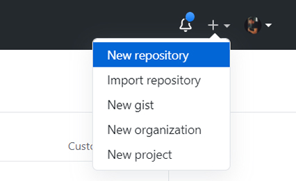
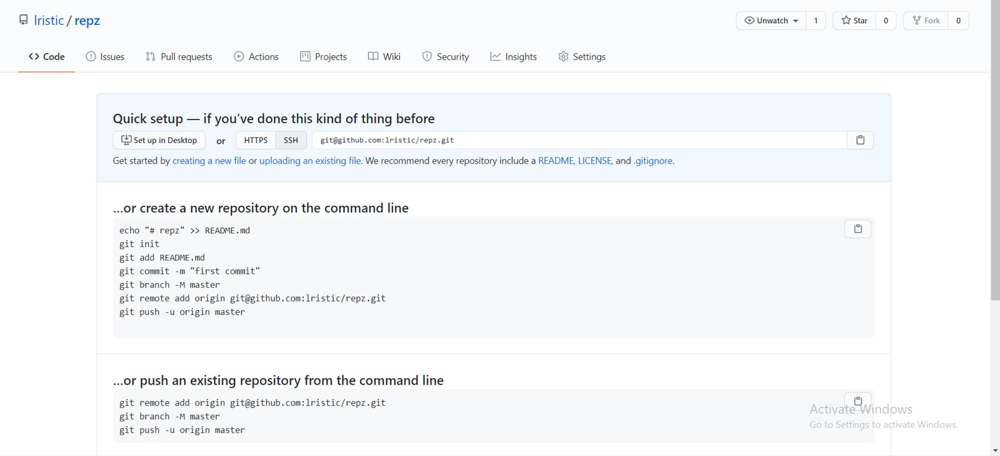

U ovoj objavi, na brzinu ćemo preći kroz pravljenje repozitorijuma na GitHubu, inicijalizaciju projekta u gitu i pamćenje promena, tj. kroz neki opšti proces kada radimo na bilo kom projektu i želimo da ga okačimo na GitHub. S obzirom da u svakom tutorijalu želim da kačim na GitHub stvari koje radimo, a da ne bih objašnjavao svaki put iz početka kako se ovo radi, pravim ovo zasebno objašnjenje na koje ću se pozivati u svakom tutorijalu.
Na ovom linku, možete skinuti Git i kada ga instalirate spremni ste za rad sa njim.
Dakle, nakon instalacije potrebno je da napravite folder sa nazivom vašeg projekta, u terminalu se pozicionirate u taj folder i izvršite komandu:
git init
i tako će Git znati da u tom folderu treba da prati promene u fajlovima u tom folderu.
Napravimo neki probni fajl koji ćemo pripremiti za inicijalni commit, npr. ako radimo neku veb stranicu nek bude prazan index.html.
Komandama:
git add .
git commit -m "Initial commit"
spremamo taj fajl za inicijalno pamćenje (commit).
Na GitHubu, kada napravite svoj nalog, u gornjem desnom uglu ćete videti:
Biramo New repository i u novom prozoru dajemo ime repozitorijumu i pravimo ga. Nakon toga, iskoćiće nam ekran:
Izvršavamo donji skup komandi koji će nam prebaciti na GitHub onaj index.html koji smo pripremili za inicijalni commit.
Ubuduće, kada god želimo da upamtimo promene koje smo napravili, komande koje izvršavamo su:
git add . - dodajemo sve fajlove u red za pamćenje
git commit -m "Poruka koja opisuje šta je promenjeno" - pamtimo promene
git push - šaljemo na GitHub repozitorijum
Ovo je neki osnovni rad sa Gitom i GitHubom kada radite sami na svom nekom projektu, a sigurno ću pokriti i slučaj kada radite u timu i kada je projekat već postojeći a vi treba da ga skinete sa GitHuba.
Komande nisam detaljno opisivao šta rade, to možete pogledati na: 9 git komandi koje moraš da znaš.
Ovo je bio samo kratak prolaz kroz svaki početak tutorijala, ako nešto ne radi slobodno mi pišite na Instagramu ili Facebooku.
Hvala što ste čitali, nadam se da je bilo korisno. :)